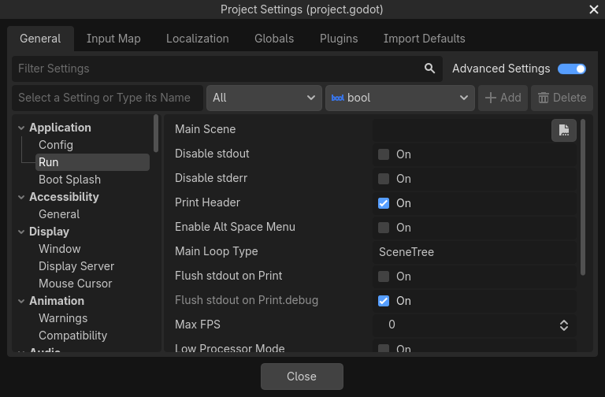

Cài đặt dự án
Có hàng chục cài đặt bạn có thể thay đổi để điều khiển cách dự án thực thi, bao gồm các cài đặt vật lý, kết xuất và cửa sổ. Các cài đặt này có thể được thay đổi từ cửa sổ Project Settings, từ code, hoặc bằng cách sửa thủ công file project.godot. Bạn có thể xem danh sách đầy đủ các cài đặt trong lớp ProjectSettings.
Bên trong, Godot lưu các cài đặt của một dự án trong file project.godot, một file văn bản thuần định dạng INI. Dù file này dễ đọc với con người và thân thiện với hệ thống quản lý phiên bản, nó không phải là cách thuận tiện nhất để chỉnh sửa. Vì lý do đó, cửa sổ Project Settings được cung cấp để chỉnh sửa các cài đặt này. Để mở Project Settings, chọn Project > Project Settings từ menu chính.

Cửa sổ Project Settings
Cửa sổ Project Settings chủ yếu được dùng để thay đổi các cài đặt trong tab General. Ngoài ra còn có các tab Input Map, Localization, Globals, Plugins và Import Defaults. Cách dùng các tab khác này được trình bày ở những phần khác của tài liệu.
Thay đổi cài đặt dự án
Tab General của cửa sổ Project Settings hoạt động khá giống inspector. Nó hiển thị danh sách các cài đặt dự án bạn có thể thay đổi, giống như các thuộc tính trong inspector. Bên trái có danh sách các danh mục, bạn có thể dùng để chọn các nhóm cài đặt liên quan. Bạn cũng có thể tìm một cài đặt cụ thể bằng trường Filter Settings.
Mỗi cài đặt đều có một giá trị mặc định. Bạn có thể đặt lại cài đặt về giá trị mặc định bằng cách nhấp vào nút mũi tên tròn Reset cạnh mỗi thuộc tính.
Thay đổi cài đặt dự án từ code
Bạn có thể dùng set_setting() để thay đổi giá trị của một cài đặt từ code:
ProjectSettings.set_setting("application/run/max_fps", 60)
ProjectSettings.set_setting("display/window/size/mode", DisplayServer.WINDOW_MODE_WINDOWED)
ProjectSettings.SetSetting("application/run/max_fps", 60);
ProjectSettings.SetSetting("display/window/size/mode", (int)DisplayServer.WindowMode.Windowed);
Tuy nhiên, nhiều cài đặt dự án chỉ được đọc một lần khi game khởi động. Sau đó, việc thay đổi cài đặt bằng set_setting() sẽ không có tác dụng. Thay vào đó, hầu hết các cài đặt đều có một thuộc tính hoặc phương thức tương ứng trên một lớp runtime như Engine hoặc DisplayServer:
Engine.max_fps = 60
DisplayServer.window_set_mode(DisplayServer.WINDOW_MODE_WINDOWED)
Engine.MaxFps = 60;
DisplayServer.WindowSetMode(DisplayServer.WindowMode.Windowed);
Nhìn chung, các cài đặt dự án được sao chép khi chạy vào các lớp Engine, PhysicsServer2D, PhysicsServer3D, RenderingServer, Viewport hoặc Window. Trong tài liệu tham khảo lớp ProjectSettings, mỗi cài đặt đều liên kết đến thuộc tính hoặc phương thức runtime tương đương của nó.
Đọc cài đặt dự án
Bạn có thể đọc cài đặt dự án bằng get_setting() hoặc get_setting_with_override():
var max_fps = ProjectSettings.get_setting("application/run/max_fps")
var window_mode = ProjectSettings.get_setting("display/window/size/mode")
int maxFps = (int)ProjectSettings.GetSetting("application/run/max_fps");
var windowMode = (DisplayServer.WindowMode)(int)ProjectSettings.GetSetting("display/window/size/mode");
Vì nhiều cài đặt dự án chỉ được đọc một lần khi khởi động, giá trị trong cài đặt dự án có thể không còn chính xác. Trong những trường hợp này, tốt hơn là đọc giá trị từ thuộc tính hoặc phương thức runtime tương đương:
var max_fps = Engine.max_fps
var window_mode = DisplayServer.window_get_mode()
int maxFps = Engine.MaxFps;
DisplayServer.WindowMode windowMode = DisplayServer.WindowGetMode();
Sửa thủ công project.godot
Bạn có thể mở file project.godot bằng một trình soạn thảo văn bản và thay đổi thủ công các cài đặt dự án. Lưu ý rằng nếu file project.godot không lưu giá trị cho một cài đặt cụ thể, thì cài đặt đó ngầm định mang giá trị mặc định. Điều này có nghĩa là nếu sửa file thủ công, bạn có thể phải viết cả tên cài đặt lẫn giá trị.
Nhìn chung, bạn nên dùng cửa sổ Project Settings thay vì sửa thủ công project.godot.
Cài đặt dự án nâng cao

Các cài đặt dự án nâng cao
Theo mặc định, chỉ một số cài đặt dự án được hiển thị. Để xem tất cả cài đặt dự án, hãy bật công tắc Advanced Settings.